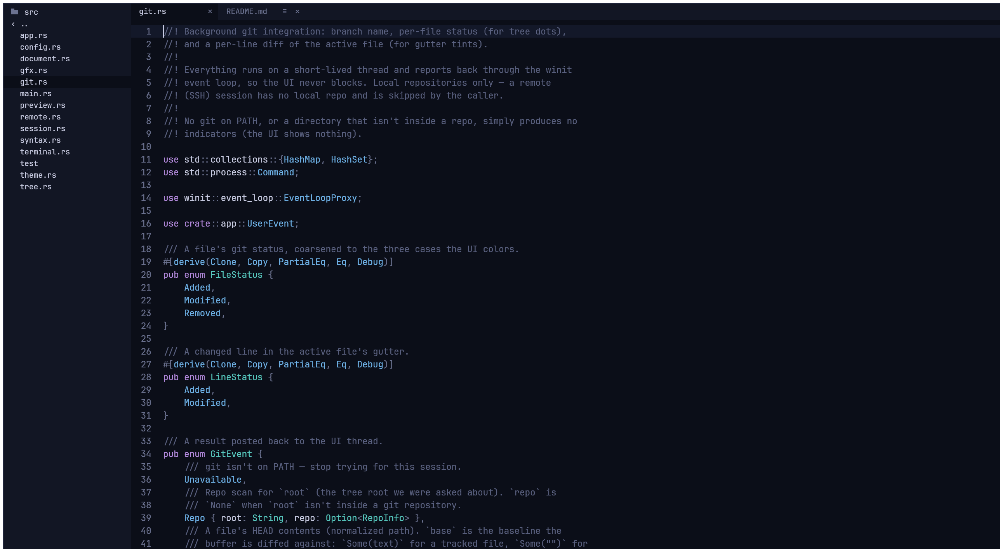
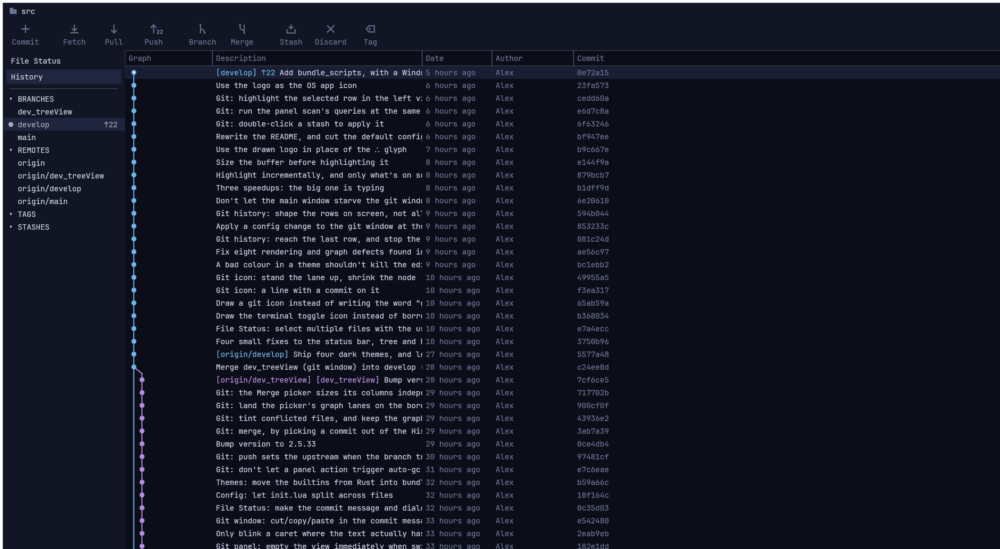

therefore ∴
A text editor. Native, written in Rust, configured in Lua. Runs on Windows, macOS and Linux.

The editor: file tree, tabs, and tree-sitter highlighting.
Features
- Syntax highlightingtree-sitter for 16 languages, including Rust, Python, JavaScript, TypeScript, Go, C, C++, and Lua.
- File tree and tabsBrowse a folder, open files in tabs, drag tabs to reorder, rename in place.
- Git windowA separate window with the commit history graph, staging, diffs, branches, merging, and stashes.
- Git in the editorChanged line numbers are tinted, the current branch shows in the status bar, and changed files get a dot in the tree.
- Embedded terminalA real shell in a panel at the bottom, toggled with Ctrl+`.
- Remote filesOpen user@host:/path and edit over SSH/SFTP. Nothing to install on the server.
- Markdown previewToggle a .md tab between source and rendered view.
- Lua configThemes, fonts, sizes, and keybindings in init.lua. Saving it applies immediately.
- ThemesFive built-in: eink, space, forest, deep_ocean, mars. Or write your own in Lua.
- Bundled fontShips JetBrains Mono, so it looks the same on every OS.

The git window: history graph, branches, and toolbar.
Build & run
Needs a Rust toolchain and a C compiler.
$ cargo run # scratch buffer
$ cargo run -- path/to/file.rs # a local file
$ cargo run -- user@host:/etc/hosts # over SFTP